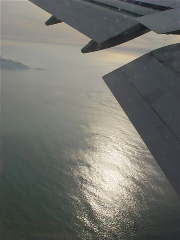
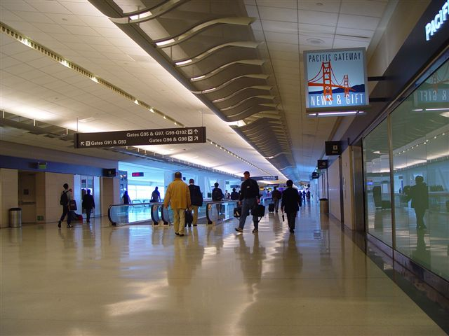
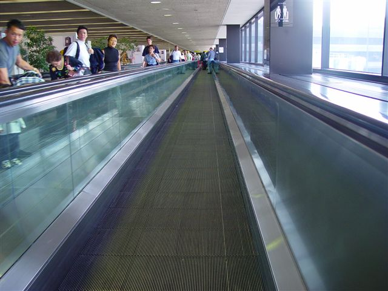
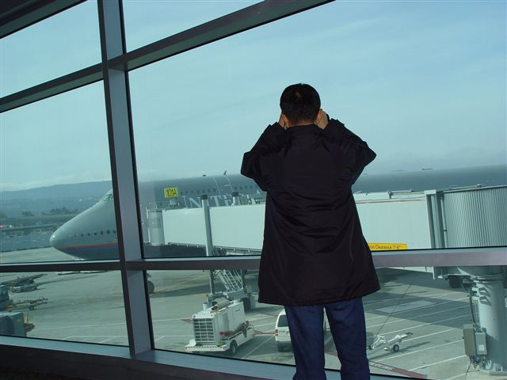
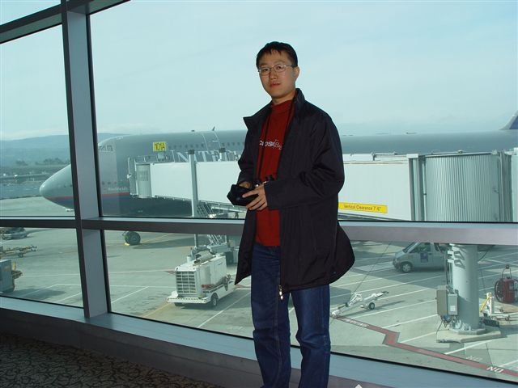
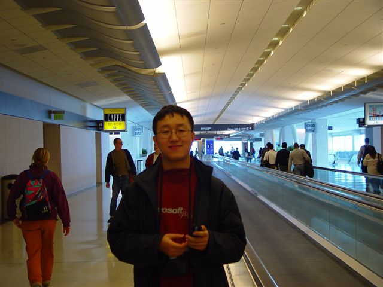
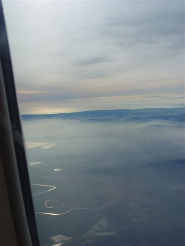
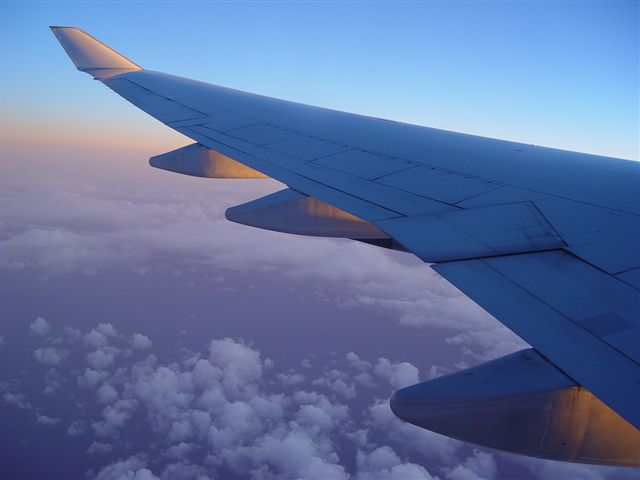
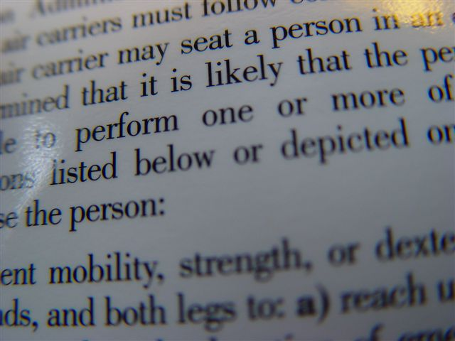
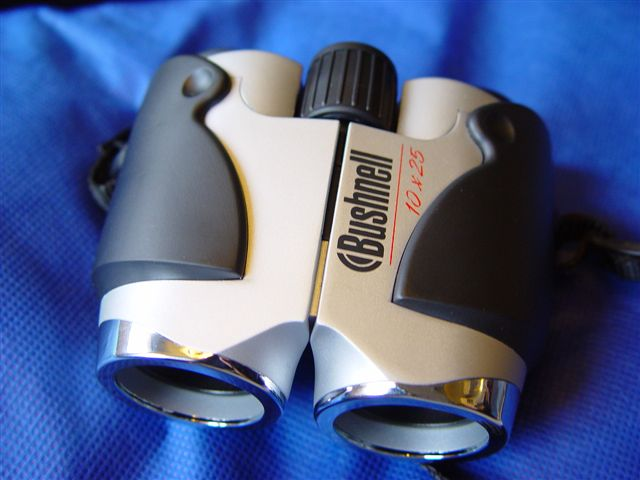

The plane leaves San Francisco. The bay shines in the sun.

San Francisco airport International terminal.

The run-way to the terminal.

I checked whether wireless network is deployed to SFO using my computer. Unfortunately, there is no wireless network there.
Waiting in the Gate 101 of International terminal. The large aircraft is waiting for us there.

Standing before the aircraft I am going to take.


Duty free gift shop in SFO airport.
Look at the rivers - it is near the San Francisco bay.

At last the plane takes off and flis into above the clouds

This is a typical advertisement effect photo - with some characters very clear while the rest blurs.

I bought a telescope in Costco. It is very nice with 10x25 magnifier lens. Not surprisingly, it is made in China. I wonder why there are so many goods that are made in China but not sold in China.

See also
Flight From SFO to PVG
Microsoft Campus Photo
Seattle
Sleepless in Seattle